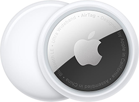

AirTag
est l’accessoire tout trouvé pour tout retrouver.
Accrochez‑en un à vos clés, glissez‑en un autre dans votre sac, et n’y pensez plus.
Grâce aux AirTags, vous pouvez facilement repérer vos objets dans l’app Localiser,
qui vous permet aussi de détecter vos appareils Apple et de ne pas perdre vos proches de vue.